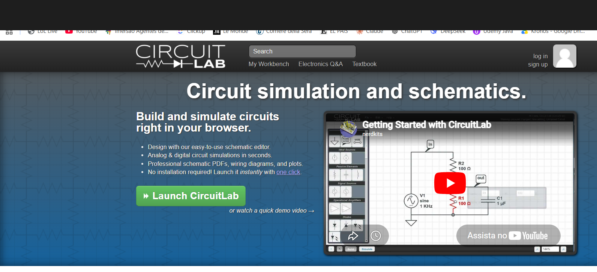
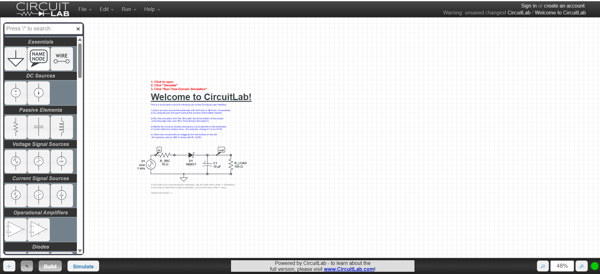
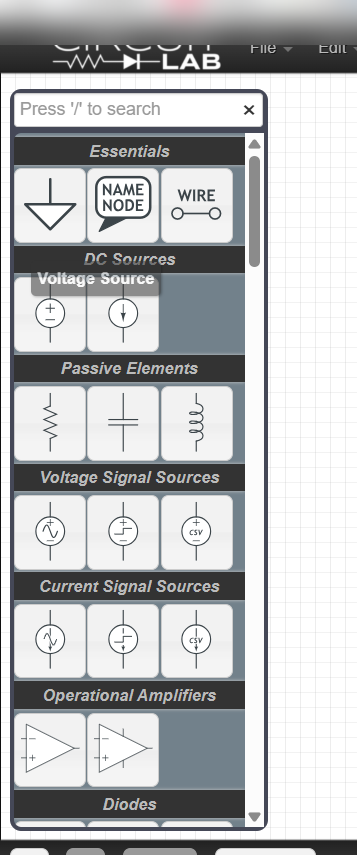
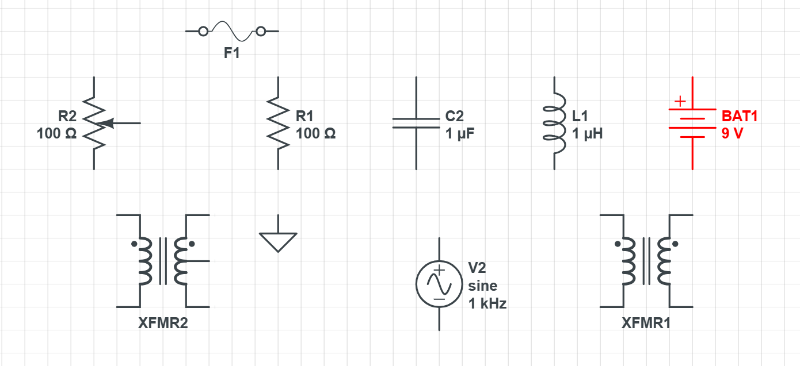
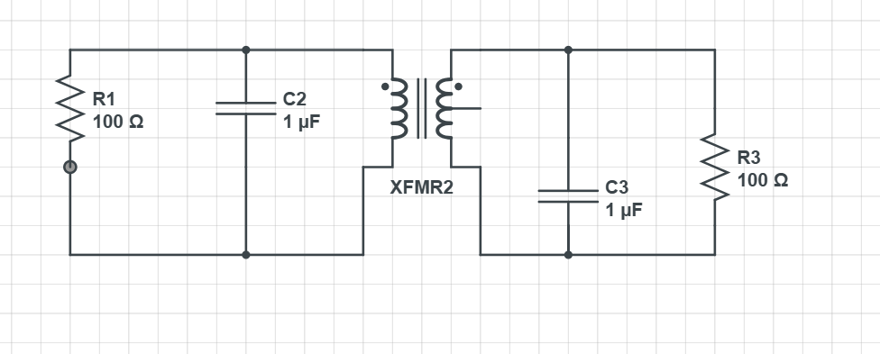
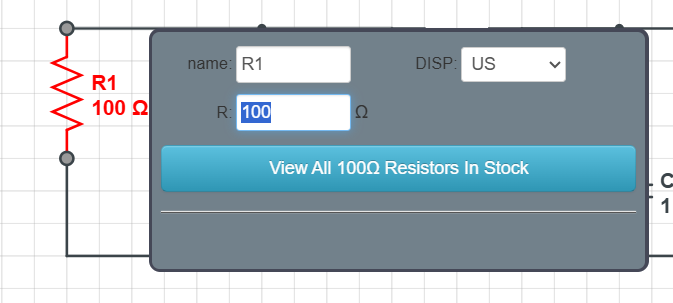
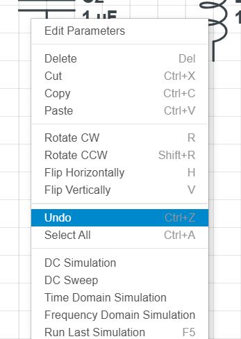

CircuitLab é uma ferramenta gratuita que roda direto no navegador. Você arrasta componentes para o canvas, conecta com fios, define os valores e exporta a imagem. Sem instalar nada, sem cadastro obrigatório.
Ideal para criar figuras de exercícios e provas em minutos — o resultado sai limpo e padronizado, igual ao de livro técnico.

O editor tem duas áreas principais:
- Painel esquerdo — lista de componentes organizados por tipo
- Canvas — área branca onde você monta o circuito
Dica: pressione / em qualquer momento para buscar componente pelo nome.

Os componentes ficam agrupados por categoria no painel esquerdo:
- Essentials — GND (terra), fio e nó de nome
- DC Sources — fonte de tensão contínua e bateria
- Passive Elements — resistor, capacitor e indutor
- Voltage Signal Sources — senoidal, pulso e CSV
- Current Signal Sources — fontes de corrente variável
- Operational Amplifiers — amp-op ideal e real
- Diodes — diodo, Zener e LED
Exemplos do que você consegue montar:


Passo a passo
1
Clique no componente no painel esquerdo — ele fica selecionado.2
Clique no canvas onde quer colocar. O componente aparece.3
Clique no terminal de um componente (ponto nas pontas) e arraste até o terminal do próximo. O fio fica preto quando a conexão está feita.4
Use GND para fechar o circuito sem precisar desenhar o fio de retorno inteiro.
1
Duplo clique em qualquer componente abre o painel de propriedades.2
Edite o campo de valor (R, C, L, tensão...) e pressione Enter. O rótulo atualiza no canvas na hora.Unidades: escreva direto no campo — 1k = 1 kΩ · 10u = 10 µF · 4.7m = 4,7 mH · 2.2n = 2,2 nF

Clique direito em qualquer componente para ver as opções. Ou use os atalhos:
Rgirar
Shift+Rgirar ao contrário
Hespelhar horizontal
Vespelhar vertical
Deldeletar
Ctrl+Zdesfazer
Ctrl+Aselecionar tudo
Clique direito no canvas para escolher o tipo de simulação:
DC Simulation
Tensões e correntes em regime permanente
DC Sweep
Varre uma tensão ou corrente e mostra a resposta
Time Domain
Comportamento ao longo do tempo — transitório e regime
Frequency Domain
Resposta em frequência — equivale ao diagrama de Bode
Capturar a imagem
1
Monte o circuito no canvas.2
Pressione Print Screen ou Win + Shift + S para capturar só a área do circuito.3
Cole direto no Word, PowerPoint ou Google Slides com Ctrl + V.Por quê print e não export? O export pega o canvas inteiro. Com o print você escolhe exatamente o que quer capturar.